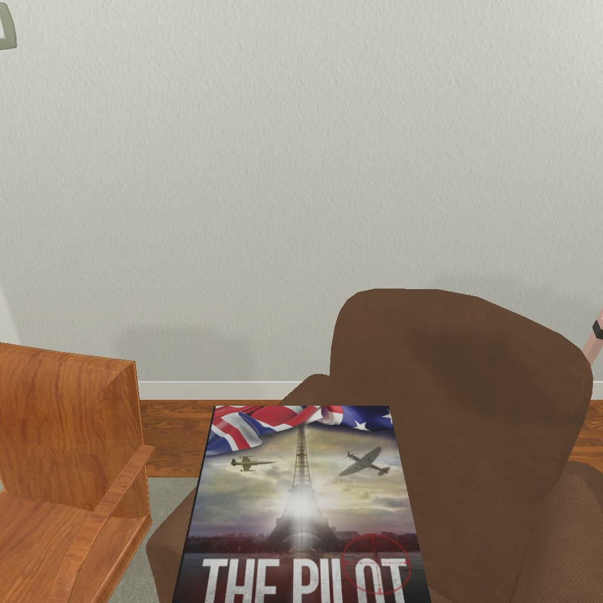

---------------------------------------------------------task: 5---------------------------------------------------------
--------------------------------------------------------------------------------------------------------------------------------------------------------------------
--------------------------------------------------------------------------------------------------------------------------------------------------------------------
Step:--------------------------------------------------------------------------17-------------------------------------------------------------------------------
----------------------------------------
VLM Prompt:
Image1:
Image2:
**Instruction**
1. Analyze the provided images to identify all visible household objects and compare the difference between images (e.h. whether the object is opened or not and taken on hand or not), focusing on those relevant to the task description "put a book in armchair."
2. Use the analysis of images and the task hint "The agent must find an object of the desired type, pick it up, find the correct location to place it, and put it down there." to answer the question: what is the most reasonable action in the choices for the task description "put a book in armchair"?
3. Decide and write the answer using the template: The answer is: (i): , where i is the real number. If there is no desired object in images, search every place based on **Initial Observation** to find the object. And if no one is exactly correct, choose a similar answer.
**Initial Observation**
You are in the middle of a room. Looking quickly around you, you can see armchair (1), sofa (1), coffeetable (1), drawer (1-4), sidetable (1-3), dresser (1)
**Answer Choices**
(1): go to sofa 1
(2): go to coffeetable 1
(3): go to drawer 1
(4): go to sidetable 1
(5): go to dresser 1
(6): go to drawer 2
(7): go to drawer 3
(8): go to drawer 4
(9): go to sidetable 2
(10): go to sidetable 3
(11): put book 1 in/on armchair 1
(12): use floorlamp 1
(13): examine book 1
**Answer**
Let's think step by step by following the instructions.
----------------------------------------
----------------------------------------
Original Response:
Firstly, we analyze the provided images. In both Image1 and Image2, we can see an armchair and a book titled "THE PILOT" on a surface that seems to be a coffee table or similar. There is no visible difference between the images regarding the book or the armchair; the book is not opened or in someone's hand in both images.
Based on the task description "put a book in armchair," and the task hint, the agent needs to find the book, pick it up, and then place it in the armchair.
From the **Initial Observation**, we know the locations of various objects in the room, including the armchair. Since the images already show us the book we need to place in the armchair, we don't need to search for it in other places like the sofa, coffee table, drawers, side tables, or dresser.
Considering the task and the images provided, the most reasonable action from the answer choices to accomplish the task "put a book in armchair" would be to pick up the book and place it in the armchair.
The answer is: (11): put book 1 in/on armchair 1.
----------------------------------------
----------------------------------------
>>> Refine Original VLM Response and Get Pure Action: put book 1 in/on armchair 1
----------------------------------------
-----------------------------------------------------------------
Running time: 11.03362226486206 seconds
Total Money: 2.018720000000001
-----------------------------------------------------------------
-----------------------------------------------------------------
Text Observation:Nothing happens.
-----------------------------------------------------------------
UNSUCCEED